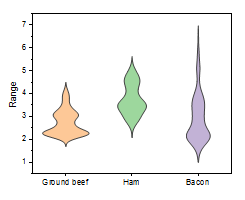

- <Scott>:

- ここでnは、ポイント数です。
- Aは
, \ IQR/1.349)") IQRはXの四分位間を示しています。
IQRはXの四分位間を示しています。 - kernelwidth関数と同様です。
- <Silverman>:

- ボックスに数値nを入力します：

バンド幅サイズの密度を拡張します。終点は -/+ Extend/100*bandwidth* {mix(X)または、max(X)}
| ボックスチャートとバイオリンプロットの分布タブ |
| ヒストグラムや列散布図の分布タブ |
| リッジラインプロットの分布タブ |
ビン化データやヒストグラムに重ねる分布曲線は 正規, 正規対数, ワイブル, 指数, ガンマ, ラプラス, ローレンツ, カーネルスムース, ポアソン, 二項式 を曲線タイプドロップダウンリストから選択できます。 選択した分布曲線が プレビューウィンドウに表示されます。
種類ドロップダウンリストから選択された曲線は、データをフィッティングしたものではありません。 代わりに、Origin はデータの平均値を決定し、平均値が一致するように曲線を重ねます。 2パラメータ曲線の場合、データの標準偏差を考慮します。
バイオリンプロットもしくはリッジラインプロットを作成する際には、デフォルトで曲線タイプがカーネルスムースとなります。以下のオプションがダイアログ内に表示されます。
| バンド幅 |
|
|---|---|
| 延伸(バンド幅の％) |
バンド幅サイズの密度を拡張します。終点は -/+ Extend/100*bandwidth* {mix(X)または、max(X)} |
曲線タイプを選択したら、現在のプロットレイヤのすべての分布曲線のパラメータ表を表示するかどうかを指定します。デフォルトでは、パラメータ表は現在のレイヤの右上に追加され、すべてのプロットの現在の分布曲線のパラメータ値が行ごとに表示されます。
この小さい表のプロットラベルは凡例の解釈モードに従います。複数区分グラフの場合、プロットラベル列の後に別のパネル列が追加され、グループ化情報が表示されます。また、異なるレイヤには別のパラメータ表が配置されます。
ボックスチャートタブでこれらのオプションを選択すると、ボックスとデータが重複せずに表示されます。 ボックス(右) + 点列(左)、ボックス(左) + 点列(右)、半ボックス(右) +点列(左)、半ボックス(左） + 点列(右)
ボックスプロットの隣に分布曲線を表示するかどうかを指定します。

対称曲線を表示するかどうかを指定します。
対称分布曲線は、バイオリンプロットと似たようなグラフになります。
各バイオリンプロットの幅を編集します。
| カウント | 各プロットの幅はビンの数によってスケールが変更されます。 |
|---|---|
| 幅 | すべてのバイオリンは同じ幅になります。 |
| 面積 | すべてのバイオリンは同じ面積になります。 |
|
カウント |
太さ |
面積 |
|  |
最大にスケーリングにチェックを付けると、分布曲線の高さを制御できます。たとえば、200に設定すると、曲線の振幅はヒストグラムの最大値と比較して2倍になります。オプションが選択されているとき分布曲線は正規化されます。
Note: ドロップダウンリストから値を選択するだけでなく、このボックスには直接手入力もできます。
分布曲線を対象に表示するときのみ利用できるオプションです。
ワークシートのすべての列を選択します。列を2つのレベルに分けて、それぞれにバイオリンプロットを作成します。分布を直接比較するのに便利です。
分布曲線を2つの異なる色で塗りつぶすには、塗りつぶし：ポイント毎オプションのインデックスの同じ列を選択します。
これは四分位付きバイオリングラフに似たような外見になります。

内部分割（2レベルのみ）するときのみ利用できます。
デフォルトでは、このオプションはチェックされていません。つまり、このグループ内のグラフは1つのスケールが適用されていることを示しています。1つのグラフ内が複数のプロットを含んでいる時、それぞれのプロットが左右2つのレベルに分割されます。そして、すべてのバイオリンプロットのスケール幅が計算されます。
このオプションをチェックすると、バイオリンプロット内の2つのレベルのスケーリングを計算します。
このドロップダウンリストから線のスタイルを選択します。
このコンビネーションボックスで、線の幅を選択または入力します。線の幅はポイントを単位とし、１ポイント＝ 1/72インチとなります。
分布曲線の色を指定します。自動を選択した場合、Originは塗りつぶし色分布曲線のヒストグラムの暗い方の色を利用します。塗りつぶし色がなしまたは自動の場合は、境界色に従います。
パネルタブでパネルが指定されている場合、パネルに一致する分布曲線について、カラーチューザーのポイントでタブが表示され、曲線の色を編集できます。
分布曲線を対象に表示するときのみ利用できるオプションです。
分布曲線の内側の色を指定します。
分布曲線を重ねたヒストグラムでのみ利用可能なオプションです。
分布曲線の下の領域を塗りつぶすか指定します。
領域の塗りつぶしの透過率を指定します。スライダを動かすか、コンビネーションボックスに0～100の整数を入力します。0は全てのシンボルは透過しておらず、100は完全に透過している事を示しています。
線の透過率に準じるにチェックが付いている場合、塗りつぶしの透過率は線タブの透過率と同じになります。バイオリンプロットでは、自動 (デフォルト)設定は パターンタブの透過率設定に準じます。